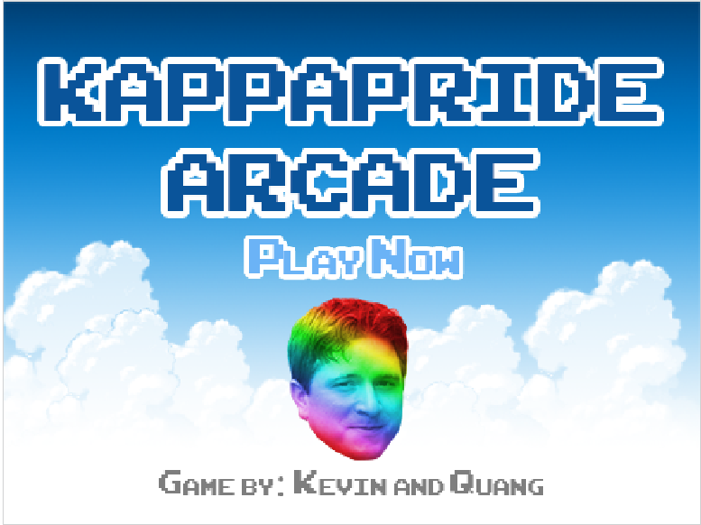
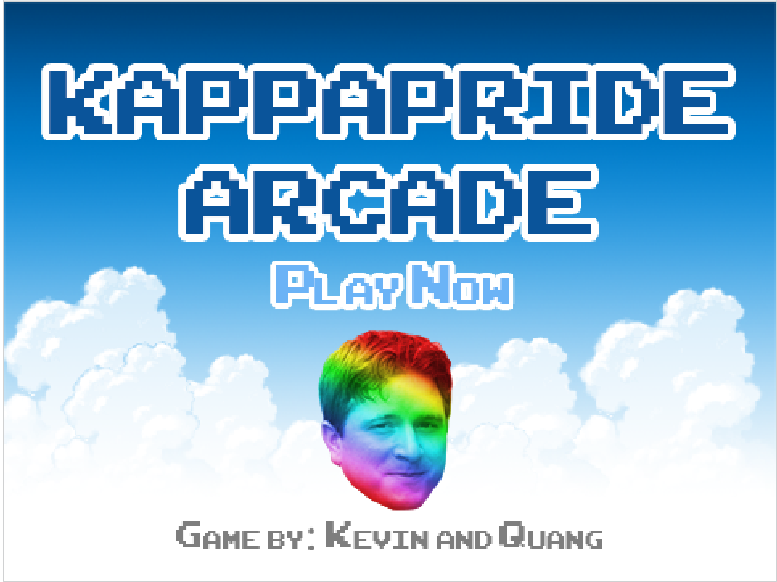

Reflection: The wizard on the green background includes my code for the start of a game. This is only a test game, so there won't be much. KappaPride Arcade resulted from the original idea: Cyberspace Arcade. By making a mess out of the first set of scripts from Cyberspace Arcade, we decided that it was easier to just start from scratch. The purpose of KappaPride Arcade was to relieve stress from American politics and Mr. Greek's class. The code included four main sprites supported by smaller sprites that interact with the main sprites to allow the game to function correctly. One of the main sprites, JohnGreek, would receive a broadcast called difficulty.Hard at the start of the last round. He would then go to a specific x position and y position, show himself on the screen, set his health to 200, say a couple of lines, provides three different broadcasts, and glide back and forth in a loop until the hero health or his own health depletes to 0. To narrow it down, only one broadcast will be mentioned. JohnGreek's broadcast of Calculus.Shoot() will be sent to himself and two sprites called calculus and Hero. Once calculus receives Calculus.Shoot(), it will change its location to JohnGreek, show itself, and glides to a specific x position. This causes a straight projectile motion across the screen. This broadcast will be repeated until the hero health or JohnGreek's health is equal to or less than 0. Upon receiving the broadcast, Hero will check to see if it is touching the calculus sprite and will lose health upon contact. When hero health is equal to or less than 0, it will broadcast play.GameOver(). Once JohnGreek receives his own broadcast of Calculus.Shot(), he will check to see if he is touching the projectile that is being launched by Hero. The concept is the same as Hero's loop. The process will repeat until JohnGreek's health reaches 0 which will initiate his hidden status, a change in the variable Score and broadcast play.Victory(). As one may notice, all of these are basic loops cycling until an event triggers another broadcast. In an event of a problem, we would have to go through every sprite and look at the scripts to see which was inputting incorrectly. Most of the difficulties that we've encountered was due to the program being too STRICT on some blocks of scripts. A noticeable "issue" with our game was when the KappaRainbow projectile became stuck for unknown reasons. With no luck on finding out the cause of this, we decided to turn this into the opportunity to make our game more challenging. We called this JohnGreek's little trick. It would be presented as if he had the ability to freeze projectiles in midair and "dodge" them as they passed through him. Overall, the game-making process from the program developed by scratch.mit.edu was fun and frustrating. May KappaPride Arcade live on to be the greatest game of all time!

Summary: "Alan and Hillary" is a tragedy that took place in 1950 Kansas. George Howdy and his daughter, Hillary, came to Kansas to start a new life on their newly owned plantation. The story progresses differently depending on the decisions being made by the narrator. Hillary would choose to buy a slave for field work, Alan Black or Joseph Obama. The story ends with the death of three people if Joseph Obama is picked or the story continues with Alan Black falling in love with Hillary. At most of Alan's endings, love fails to prevail and eventually ends in tragedy and death.
Reflection: To start out, we filled out a google document containing basic plot elements and incorporated them onto a flow chart to organize the story in a chronological order. Decision points were marked by branched off arrows. Using our knowledge of python we then transferred the story and our first draft of the code on another google docs and then into repl.it and Cloud9. We first created a function to print out the introduction. A second function was defined for organizing the decision points. We used if-elif-else to input each branched off point for the narrator to choose to print. Problems included really long lines of code at first and error outputs from indentation issues. We solved the excessive lines of code issue by defining one function for the decision points. Each time there is a decision point, the code will check this function to continue the story respective to the raw input. We learned that the error outputs from indentation issues were due to the copy-and-pasting of the entire code (the first draft) from google docs. Therefore, we rewrote everything from scratch. In my sincerest opinion, the work was fairly easy. The story itself was fun to write due to its creativity and ability to have many possible endings. However, the code was rather repetitive and mundane. When experiencing the stories, the one that stood out to me was a foreign exchange student going to Japan because of its rather abrupt and random endings. Despite the continuous plot, almost all of the endings were death by something unrelated to the situation. The other one that successfully humored me not for its plot but for its reference to another student was the story about about Bteven Sao. If I had toe chance to do this over again, I would change the code so that everytime that the narrator receives the invalid message, they wouldn't have to start all over. I would also improve the story by adding in more minor details and decision points.
{kind=link}